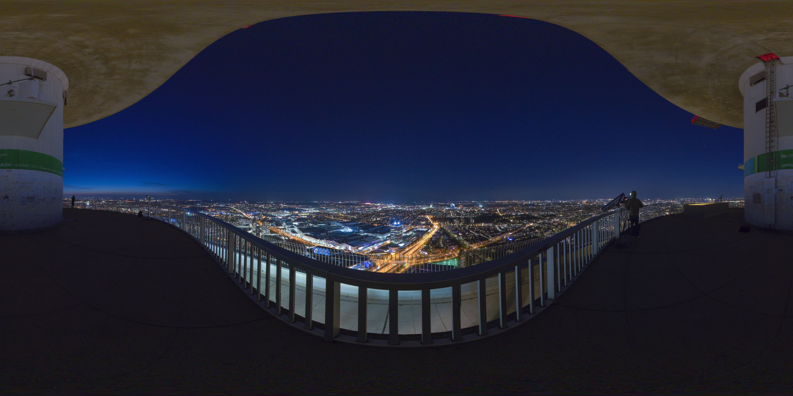
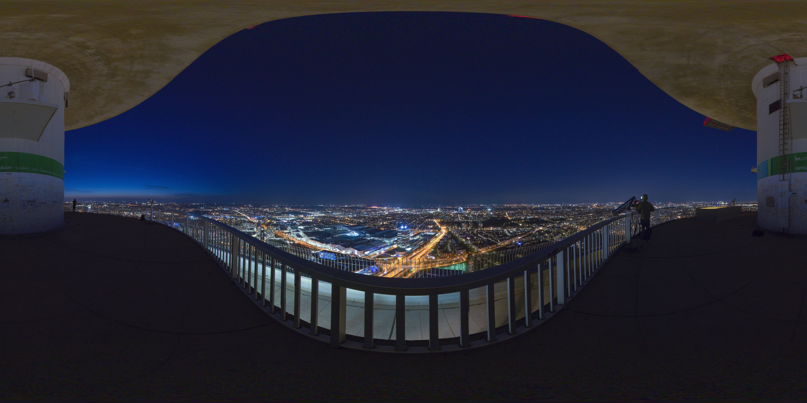

1.本程序由石军完成，属于虚拟现实课程作品。
2. 阅读完成后，点击下一步按钮，然后可看到360度视角的照片。按住鼠标不放， 上下 左右 滑动 即可转换视角进行360度浏览。
3. 点击左下角全屏按钮或者F11，就可全屏观看。
4. 本程序总共有3张图片，按下键盘上的回车键， 即可浏览下一张照片（因图片较大，首次加载可能稍等 1到2秒）。
1.源代码：可按F12查看源代码，或者前往代码仓库查看。
2.本程序使用了 JavaScript 框架 aframe（A web framework for building virtual reality experiences），关于 aframe 框架的详 情，可参见：aframe
3.程序中用到的 360 度全景照片，均来源于 flickr 网站的 Equirectangular 兴趣小组。更多照片参见：Equirectangular 兴趣小组(需翻墙)
如果想返回来看使用说明，按键盘的Esc键